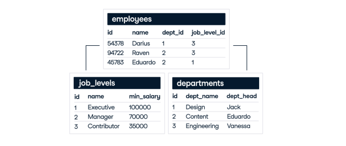
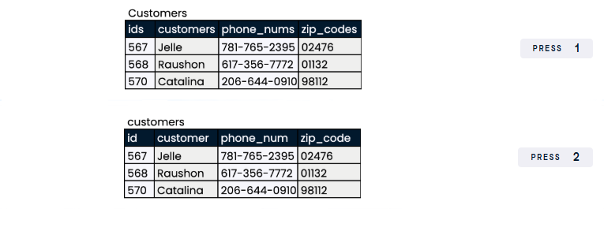
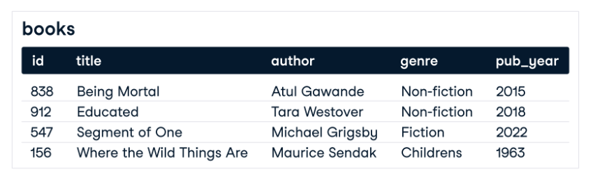
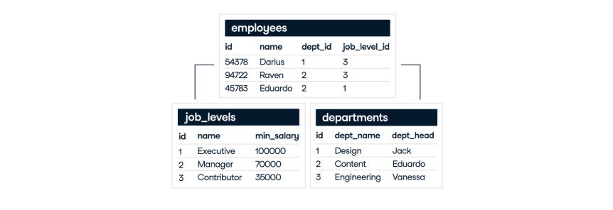

🗄️ جلسه اول · مبانی پایگاه داده
آشنایی با پایگاه دادهها
در این جلسه یاد میگیریم دادهها چگونه در پایگاه داده ذخیره و سازماندهی میشوند، جدولها چه ساختاری دارند و ارتباط میان جدولها چگونه شکل میگیرد. همچنین با سرورها، انواع داده و شِمای پایگاه داده آشنا میشویم.
SQL · Databases · Tables · Data Types
Database
Tables
Relationships
Data Types
SQL Basics
✨ مسیر یادگیری
در پایان این جلسه چه چیزهایی یاد میگیریم؟
پیش از نوشتن دستورهای SQL، باید بدانیم دادهها در چه ساختاری نگهداری میشوند. شناخت اجزای پایگاه داده باعث میشود هنگام خواندن یا تحلیل دادهها، بدانیم هر مقدار به کدام جدول و ستون تعلق دارد و جدولها چگونه به یکدیگر مرتبطاند.
- تعریف پایگاه داده و کاربرد زبان SQL
- شناخت جدول، رکورد، فیلد، سطر و ستون
- درک پایگاه داده رابطهای و ارتباط بین جدولها
- انتخاب شناسه یکتا و نامگذاری اصولی جدولها و فیلدها
- آشنایی با سرورها، انواع داده و شِمای پایگاه داده
🗄️ ۱. پایگاه داده چیست؟
پایگاه داده یا Database مجموعهای سازمانیافته از دادههاست که برای ذخیرهسازی، مدیریت و دسترسی مؤثر به اطلاعات طراحی میشود. بهجای نگهداری پراکنده اطلاعات در فایلهای متعدد، دادهها در ساختاری مشخص قرار میگیرند تا بتوان آنها را سریعتر پیدا کرد، مرتب کرد و تحلیل کرد.
برای درک بهتر، یک کتابخانه را تصور کنید. کتابخانه باید اطلاعات کتابها، اعضا و امانتگرفتن کتابها را نگهداری کند. بنابراین میتوان برای آن یک پایگاه داده شامل سه جدول در نظر گرفت:
📚 جدول کتابها
اطلاعاتی مانند شناسه کتاب، عنوان، نویسنده و سال انتشار.
👤 جدول اعضا
اطلاعات اعضای کتابخانه، مانند شماره عضویت، نام و سال ثبتنام.
🔄 جدول امانتها
مشخص میکند چه عضوی، کدام کتاب را و در چه زمانی امانت گرفته است.
جدولهای پایگاه داده ممکن است در نگاه اول شبیه صفحههای یک نرمافزار صفحهگسترده باشند؛ اما پایگاه داده برای مدیریت حجم بیشتری از اطلاعات و کار همزمان کاربران طراحی شده است. همچنین میتوان با استفاده از سازوکارهای امنیتی مانند رمزنگاری، از دادهها محافظت کرد.
پایگاه داده فقط محلی برای نگهداری اطلاعات نیست؛ ساختار آن بهگونهای طراحی میشود که بتوان دادهها را بهشکل منظم مدیریت کرد و در زمان نیاز به آنها دسترسی داشت.
زبان SQL چه نقشی دارد؟
SQL کوتاهشده عبارت Structured Query Language و بهمعنای «زبان پرسوجوی ساختیافته» است. این زبان یکی از رایجترین زبانها برای ارتباط با دادههای پایگاه داده، بهویژه پایگاههای داده رابطهای، محسوب میشود.
با استفاده از دستورهای SQL که Query یا «پرسوجو» نامیده میشوند، میتوان دادهها را بازیابی، سازماندهی و تحلیل کرد. در این دوره ابتدا با ساختار پایگاه داده آشنا میشویم و سپس نوشتن دستورهای SQL برای کار با دادهها را یاد میگیریم.
اگر بخواهیم اطلاعات کتابهای یک کتابخانه را مشاهده کنیم، در مرحله کار با SQL میتوانیم پرسوجویی بنویسیم که دادههای جدول کتابها را درخواست کند. در این مرحله مهم است بدانیم دادهها در کدام جدول قرار دارند؛ نوشتن دستور را در بخشهای بعدی یاد میگیریم.
📋 ۲. جدولها، سطرها و ستونها
جدول یا Table یکی از اجزای اصلی پایگاه داده است. هر جدول معمولاً اطلاعات مربوط به یک موضوع مشخص را نگهداری میکند؛ برای مثال، جدول اعضا فقط اطلاعات اعضای کتابخانه را در خود جای میدهد.
اطلاعات هر جدول در قالب سطرها و ستونها سازماندهی میشوند:
↔️ سطر یا رکورد
هر سطر، اطلاعات مربوط به یک مورد یا یک مشاهده مشخص را نگهداری میکند. در جدول اعضا، هر سطر میتواند نماینده یک عضو باشد.
↕️ ستون یا فیلد
هر ستون یک ویژگی مشخص از موارد ثبتشده را نشان میدهد؛ مانند نام عضو، سال عضویت یا مبلغ جریمه.
در اصطلاح پایگاه داده، به سطرها معمولاً Record و به ستونها Field گفته میشود. بنابراین «سطر» و «رکورد» به یک بخش از اطلاعات اشاره دارند و «ستون» و «فیلد» نیز در این کاربرد معادل یکدیگرند.
فرض کنید جدول اعضای کتابخانه چهار رکورد دارد. هر رکورد اطلاعات یک عضو را ثبت میکند. اگر یکی از رکوردها مربوط به «جاسمین» باشد، همان سطر میتواند سال عضویت او و مبلغ جریمهای را که به کتابخانه بدهکار است نیز نشان دهد. در مقابل، فیلد نام شامل نام تمام اعضای ثبتشده در جدول خواهد بود.
برای تشخیص سریع ساختار جدول، این دو پرسش را به خاطر بسپارید: «هر سطر درباره چه کسی یا چه چیزی است؟» و «هر ستون کدام ویژگی را ثبت میکند؟»
🔗 ۳. پایگاه داده رابطهای
در بسیاری از پایگاههای داده، اطلاعات در چند جدول جداگانه ذخیره میشوند. این جدولها مستقل از یکدیگر نیستند؛ بلکه از طریق دادههای مشترک به هم ارتباط پیدا میکنند. به چنین ساختاری Relational Database یا پایگاه داده رابطهای گفته میشود.
در مثال کتابخانه، جدول امانتها میتواند از طریق شماره عضویت به جدول اعضا و از طریق شناسه کتاب به جدول کتابها متصل شود. به این ترتیب، اطلاعات هر موضوع در جدول مناسب خود باقی میماند، اما هنگام نیاز میتوان ارتباط میان آنها را بررسی کرد.

در نمودار بالا، جدول employees اطلاعات کارکنان را نگهداری میکند. ستون job_level_id آن را به جدول job_levels و ستون dept_id آن را به جدول departments مرتبط میکند. در نتیجه، اطلاعاتی مانند سطح شغلی یا نام دپارتمان لازم نیست برای هر کارمند بهصورت کامل تکرار شود.
ارتباط میان جدولها کمک میکند اطلاعات مرتبط را کنار هم تحلیل کنیم؛ برای مثال میتوانیم مشخص کنیم هر کارمند در کدام دپارتمان فعالیت میکند یا چه سطح شغلی دارد.
چرا اطلاعات را در چند جدول نگهداری میکنیم؟
اگر تمام اطلاعات اعضا و امانتها را در یک جدول بزرگ ترکیب کنیم، اطلاعات بعضی افراد ممکن است بارها تکرار شود. برای نمونه، اگر یک عضو چند کتاب امانت بگیرد، مشخصات او در چند سطر تکرار خواهد شد. در چنین وضعیتی، شماره عضویت دیگر در تمام سطرها یکتا نیست و تشخیص اطلاعات دشوارتر میشود.
با نگهداری اطلاعات در جدولهای جداگانه و مرتبط، از تکرار غیرضروری دادهها جلوگیری میکنیم و میتوانیم هنگام نوشتن پرسوجوهای SQL، اطلاعات موردنیاز را از جدولهای مرتبط به دست آوریم.
پرسوجوی SQL معمولاً دادهها را بر اساس دستورهای نوشتهشده بازیابی و نمایش میدهد؛ اجرای یک پرسوجوی خواندن اطلاعات، بهخودیخود دادههای ذخیرهشده را تغییر نمیدهد.
🏷️ ۴. نامگذاری جدولها و فیلدها
نامگذاری مناسب باعث میشود ساختار پایگاه داده خواناتر باشد و هنگام نوشتن پرسوجوهای SQL، نام جدول یا فیلد را راحتتر تشخیص دهیم. نامها باید روشن و مرتبط با اطلاعاتی باشند که نگهداری میکنند؛ برای مثال، نامهایی مانند books، products و inventory.
قواعد پیشنهادی برای نام جدول و فیلد
- نام جدول و فیلد را با حروف کوچک بنویسید.
- بهجای فاصله، از زیرخط _ استفاده کنید.
- نام فیلد بهتر است مفرد باشد؛ زیرا ویژگی یک رکورد را توصیف میکند.
- در یک جدول، دو فیلد نباید نام یکسان داشته باشند.
- نام فیلد نباید با نام جدولی که در آن قرار دارد یکسان باشد؛ این کار تشخیص منظور را آسانتر میکند.

در نمونه مناسب، نام جدول customers با حروف کوچک نوشته شده و نام فیلدها بهشکل id، customer، phone_num و zip_code آمده است. این نامها کوتاه، قابلفهم و هماهنگ با قواعد نامگذاری هستند.
شناسه یکتا یا کلید
در هر جدول معمولاً فیلدی ویژه وجود دارد که هر رکورد را از تمام رکوردهای دیگر همان جدول متمایز میکند. این فیلد را Unique Identifier یا شناسه یکتا مینامند و گاهی از آن با عنوان Key یاد میشود.
مقدار این فیلد باید برای هر رکورد یکتا باشد. برای مثال، در جدول اعضا، شماره کارت عضویت انتخاب مناسبتری از نام فرد است؛ زیرا ممکن است دو عضو نام یکسانی داشته باشند، اما شماره کارت آنها باید متفاوت باشد.

در جدول books ممکن است دو کتاب عنوانهای مشابه یا حتی یکسان داشته باشند؛ بنابراین عنوان کتاب الزاماً شناسه مناسبی نیست. سال انتشار نیز میتواند برای چند کتاب یکسان باشد. اما ستون id برای هر رکورد مقدار جداگانهای دارد و انتخاب مناسبتری برای کلید جدول است.
🖥️ ۵. سرورها و محل ذخیرهسازی داده
دادههای پایگاه داده باید روی یک بستر ذخیرهسازی قرار بگیرند. در بسیاری از سامانهها، اطلاعات روی دیسک سخت یک Server یا سرور ذخیره میشوند.
سرور رایانهای قدرتمند است که اطلاعات را نگهداری میکند و از طریق درخواستهایی که در بستر شبکه دریافت میکند، خدماتی را در اختیار کاربران یا رایانههای دیگر قرار میدهد. در مثال پایگاه داده، یکی از این خدمات، فراهمکردن امکان دسترسی به دادههاست.
سرورها میتوانند تعداد زیادی درخواست را بهصورت همزمان مدیریت کنند. به همین دلیل چندین کاربر یا رایانه میتوانند در یک بازه زمانی به اطلاعات یک سامانه دسترسی داشته باشند.
سرور و پایگاه داده یک مفهوم نیستند: سرور، رایانه یا بستری است که خدمات ارائه میکند؛ پایگاه داده، مجموعه سازمانیافته اطلاعاتی است که ممکن است روی فضای ذخیرهسازی سرور قرار داشته باشد.
🔢 ۶. انواع داده
هنگام ایجاد جدول، برای هر فیلد باید مشخص کنیم چه نوع اطلاعاتی در آن ذخیره خواهد شد. این ویژگی را Data Type یا نوع داده مینامند.
انتخاب نوع داده به ماهیت اطلاعات و عملیات موردنیاز بستگی دارد. برای مثال، انجام عملیات ضرب روی عدد منطقی است؛ اما ضربکردن نام یک شخص معنایی ندارد. بنابراین نوع داده باید با محتوای فیلد سازگار باشد.
| نوع داده | کاربرد | نمونه | توضیح |
|---|---|---|---|
| VARCHAR | رشته متنی | "Maham" | برای ذخیره توالیای از نویسهها؛ مانند حروف، اعداد و نشانهگذاری. |
| INT | عدد صحیح | 125 | برای ذخیره عددهای بدون بخش اعشاری. |
| NUMERIC | عدد با دقت مشخص | 2.05 | برای ذخیره مقادیر عددی دارای بخش اعشاری و دقت عددی مشخص. |
رشتهها؛ VARCHAR
String یا رشته، دنبالهای از نویسههاست. این نویسهها میتوانند شامل حروف، اعداد یا علائم نگارشی باشند. نام اعضای کتابخانه، مانند Maham و James، نمونههایی از رشته هستند.
یکی از انواع داده رایج برای نگهداری رشتهها، VARCHAR است. این نوع داده برای نگهداری متنهایی با طولهای متفاوت کاربرد دارد.
اعداد صحیح؛ INT
نوع داده Integer برای عددهای صحیح، یعنی عددهایی بدون بخش اعشاری، استفاده میشود. INT یکی از انواع رایج داده برای ذخیره این اعداد است. در بسیاری از پیادهسازیهای متداول، دامنه آن حدوداً از منفی دو میلیارد تا مثبت دو میلیارد را پوشش میدهد؛ دامنه دقیق به سامانه پایگاه داده بستگی دارد.
اعداد اعشاری؛ NUMERIC
برای ذخیره عددهایی که بخش اعشاری دارند، مانند مبلغ جریمه 2.05، از نوع داده عددی مناسب استفاده میکنیم. در این درس، NUMERIC بهعنوان نوعی برای نگهداری عددهای دارای بخش اعشاری معرفی میشود. این نوع داده میتواند دقت عددی مشخصی را حفظ کند.
نوع داده را فقط بر اساس ظاهر مقدار انتخاب نکنید؛ به کاربرد آن نیز توجه کنید. برای نمونه، شماره تلفن ممکن است از رقم تشکیل شده باشد، اما معمولاً قرار نیست روی آن عملیات ریاضی انجام دهیم؛ پس نباید صرفاً به دلیل عددیبودن ظاهر آن، آن را یک مقدار عددی محاسباتی در نظر بگیریم.
🧭 ۷. شِمای پایگاه داده
Database Schema یا شِمای پایگاه داده، طرح یا نقشهای از ساختار پایگاه داده است. شِما نشان میدهد چه جدولهایی در پایگاه داده وجود دارند، جدولها چگونه به یکدیگر مرتبطاند و هر فیلد چه نوع دادهای را میتواند نگهداری کند.
برای مثال، شِمای پایگاه داده کتابخانه میتواند نشان دهد که فیلدهای عنوان کتاب، نویسنده و ژانر از نوع VARCHAR هستند. همچنین میتواند ارتباط جدول اعضا با جدول امانتها را نمایش دهد و مشخص کند که جدول اعضا مستقیماً به جدول کتابها متصل نشده است.
برای آشنایی با یک پایگاه داده جدید، شِما یکی از بهترین نقاط شروع است؛ زیرا پیش از نوشتن پرسوجو میتوانید ساختار جدولها، ارتباطها و نوع داده فیلدها را بررسی کنید.
تفاوت نمودار ارتباطی و شِما
نمودار ارتباطی معمولاً بر نمایش جدولها و پیوند میان آنها تمرکز دارد. شِمای پایگاه داده میتواند علاوه بر این ارتباطها، جزئیات بیشتری مانند نام فیلدها و نوع داده هر فیلد را نیز نشان دهد. بنابراین برای فهم نوع داده یک فیلد، باید به اطلاعات شِمای پایگاه داده مراجعه کنیم؛ صرفاً نگاهکردن به مقادیر ثبتشده در جدول کافی نیست.
⌨️ ۸. نگاهی مقدماتی به پرسوجوهای SQL
در بخشهای بعدی، دستورهای SQL را برای بازیابی و تحلیل دادهها بهکار خواهیم برد. دو نمونه زیر نشان میدهند که یک پرسوجو میتواند فقط مقادیر یکتا را انتخاب کند یا تعداد ردیفهای خروجی را محدود سازد.
انتخاب مقادیر یکتا با DISTINCT
واژه DISTINCT برای حذف مقادیر تکراری از نتیجه یک پرسوجو به کار میرود. اگر چند رکورد مقدار یکسانی در ستون موردنظر داشته باشند، مقدار تکراری فقط یکبار در خروجی نمایش داده میشود.
SELECT DISTINCT employee_id
FROM campaigns;این دستور، مقادیر یکتای ستون employee_id را از جدول campaigns برمیگرداند؛ نه فهرست کانالها و نه شناسه کمپینها.
محدودکردن تعداد ردیفها با LIMIT
واژه LIMIT تعداد ردیفهایی را که در خروجی پرسوجو برگردانده میشوند محدود میکند. برای مثال، دستور زیر حداکثر سه ردیف از ستونهای انتخابشده را نمایش میدهد:
SELECT campaign_id, customer_id, spend
FROM campaigns
LIMIT 3;بدون تعیین ترتیب با ORDER BY، نباید فرض کنیم کدام سه ردیف حتماً انتخاب میشوند. LIMIT 3 تعداد ردیفها را محدود میکند، نه اینکه بهتنهایی ترتیب مشخصی برای آنها تعیین کند.
گونههای مختلف SQL
سامانههای مدیریت پایگاه داده ممکن است گونهها یا گویشهای متفاوتی از SQL داشته باشند. بسیاری از واژههای کلیدی و ساختارهای اصلی میان آنها مشترک است، اما ممکن است در بعضی قابلیتها، توابع یا جزئیات نحوی تفاوتهایی وجود داشته باشد. برخی محصولات نیز نسخههای رایگان و تجاری ارائه میکنند.
✅ جمعبندی جلسه
آنچه باید به خاطر بسپارید
- پایگاه داده، دادهها را در ساختاری سازمانیافته نگهداری میکند و SQL زبان رایج ارتباط با دادههاست.
- جدول از سطرها و ستونها تشکیل میشود؛ سطر یک رکورد و ستون یک فیلد را نشان میدهد.
- در پایگاه داده رابطهای، جدولها از طریق دادههای مشترک به یکدیگر متصل میشوند.
- شناسه یکتا هر رکورد را از رکوردهای دیگر همان جدول متمایز میکند.
- سرور بستر ارائه خدمات و ذخیرهسازی است و میتواند درخواستهای متعدد را مدیریت کند.
- نوع داده باید با ماهیت اطلاعات و عملیات موردنیاز سازگار باشد؛ مانند VARCHAR، INT و NUMERIC.
- شِما نقشه ساختار پایگاه داده، جدولها، ارتباطها و نوع داده فیلدهاست.
- DISTINCT مقادیر تکراری را از نتیجه حذف میکند و LIMIT تعداد ردیفهای خروجی را محدود میسازد.
📝 آزمون تعاملی پایان جلسه
به پرسشها پاسخ دهید. بعضی پرسشها بر اساس جدولها و نمودارهای همین درس طراحی شدهاند؛ بنابراین اطلاعات لازم در خود سؤال نمایش داده شده است.
آزمون مبانی پایگاه داده
۰ از ۱۰ سؤال پاسخ دادهشده
۱۰ پرسش · هر پرسش ۱ امتیاز
میزان پیشرفت آزمون
۲ نمودار زیر چه ساختاری را نشان میدهد؟

۳ کدام فیلد بهترین انتخاب برای شناسه یکتای جدول کتابهاست؟
۴ کدام جدول از نظر شیوه نامگذاری، ساختار مناسبتری دارد؟
۵ خروجی پرسوجوی زیر کدام ستون را شامل میشود؟
SELECT DISTINCT employee_id
FROM campaigns;فرض کنید جدول campaigns شامل ستونهای زیر است. کدام گزینه با ستون انتخابشده در دستور مطابقت دارد؟
| channel |
|---|
| Billboard |
| TV |
| Paid search |
| Social Media |
| employee_id |
|---|
| 9 |
| 6 |
| 17 |
| 38 |
| campaign_id |
|---|
| 3 |
| 1 |
| 4 |
| 2 |
| 5 |
۶ با توجه به دستور زیر، کدام خروجی با ستونهای انتخابشده و محدودیت تعداد ردیفها سازگار است؟
SELECT campaign_id, customer_id, spend
FROM campaigns
LIMIT 3;| campaign_id | customer_id | spend |
|---|---|---|
| 1 | 8493 | 3312.32 |
| 2 | 1755 | 4206.94 |
| 3 | 679 | 7359.58 |
| campaign_id | employee_id |
|---|---|
| 1 | 6 |
| 2 | 9 |
| 3 | 9 |
| campaign_id | channel | employee_id |
|---|---|---|
| 1 | TV | 6 |
| 2 | Billboard | 9 |
| 3 | Paid search | 9 |